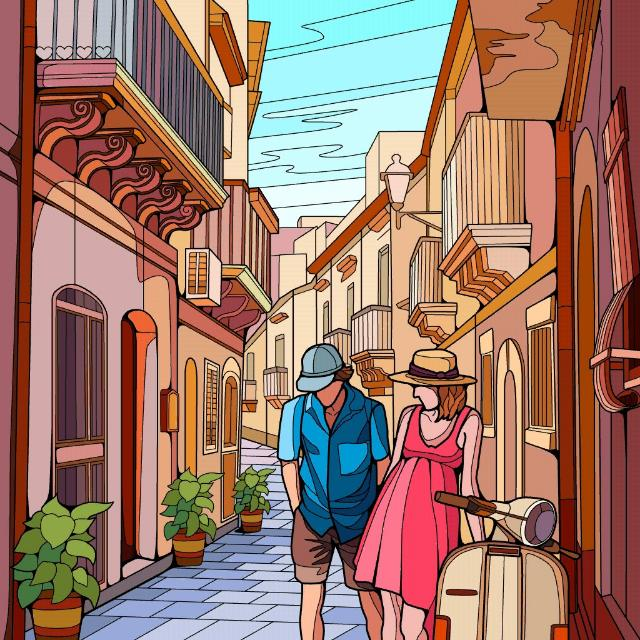
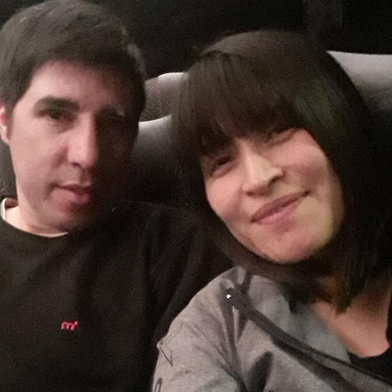
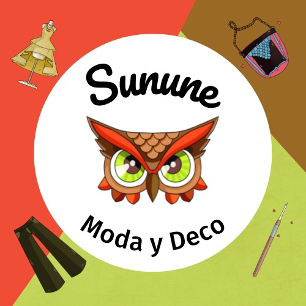

| Inicio | Plantas | Nosotros |
|  |  |  |
Rocio |
Yani |
Facu |
Nacida en Neuquén, el 30 de Mayo del 89, apasionada por la lectura. |
Nacida en Viedma, Río Negro, en el 85, aficionada por las artesanías, pero no hace. |
Nacido en 1988, nacido y criado en Neuquén, amante de los gatos. |
| Hizo esta página | Hizo esta página | Hizo esta página |
| ©Todos los derechos reservados | Neuquén, Argentina | Visita nuestra blog |